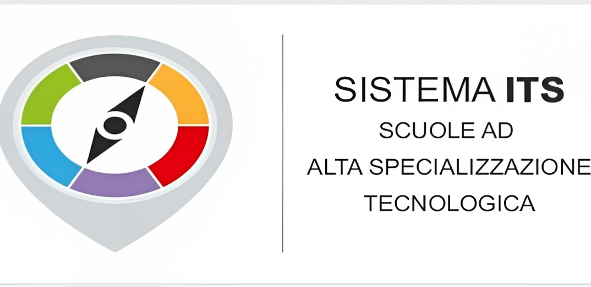

ITS
CHI SONO?
Gli I.T.S. sono una forma di formazione terziaria non universitaria che risponde alla crescente domanda di competenze tecniche e tecnologiche avanzate da parte delle imprese per promuovere l'innovazione.
COSA ABBIAMO FATTO:
La giornata di lunedì 24-04-2023 ha visto lo svolgimento del progetto ITS, con una durata di 1 ora.
Durante questo periodo, la referente Giulia Costi ci ha guidati attraverso la scelta tra università e lavoro, fornendo utili consigli per orientarsi al meglio.
Inoltre, ci ha illustrato le competenze chiave richieste nel mondo del lavoro, partendo dalle abilità trasversali (soft skill) e terminando con le competenze tecniche specifiche (hard skill).
COMPETENZE ACQUISITE:
- Capacità di valutare le opzioni tra università e lavoro.
- Conoscenza delle soft skills (competenze trasversali).
- Conoscenza delle hard skills (competenze tecniche).